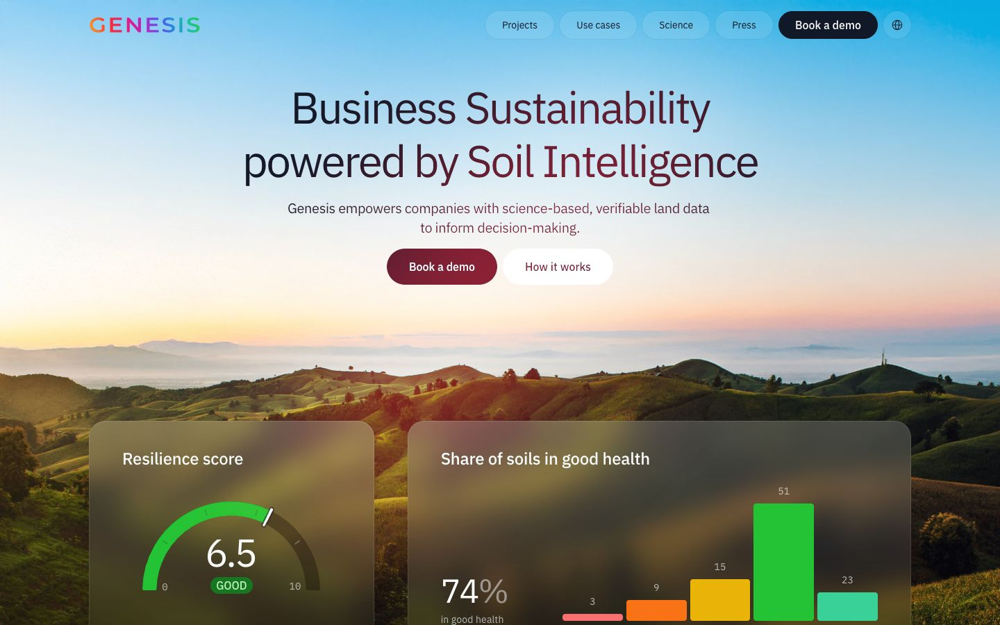

References / Website / 192
Genesis soil intelligence website
A climate-data company whose dashboard cards are frosted glass over a sunrise landscape photo.
- Source
- genesis.live
- Creator
- Genesis
- Style
- Glassmorphism (agent-proposed, not yet reviewed by a person)
- Moods
- Calm, luminous, layered
- Evidence
- Captured with
tools/capture.mjs(headless Chrome, 1440 × 900) on 28 September 2026 and inspected. Nothing covers the page. Found through the One Page Love glassmorphism collection (discovery only). - Reviewed
- Rights
- Third-party work, stored with credit for commentary. License: unverified. Rights policy
Observed
- The backdrop is a photo of green hills under a sky that fades from blue at the top to peach and pink at the horizon.
- Two large cards at the bottom (‘Resilience score’ and ‘Share of soils in good health’) are translucent and blurred: the hills behind them show as soft green and brown.
- The cards have large rounded corners and a faint lighter edge. Their content is flat: a green gauge, colored bars, and white sans-serif type.
- The navigation links sit in separate translucent pills; ‘Book a demo’ is a solid near-black pill.
- The primary hero button is a solid dark red pill next to a white pill.
Why it belongs
Measured: 37 % of boxes use a backdrop blur and 77 % are rounded (median radius 12 px). No box has a CSS border, and 54 % have a gradient fill, so the light edge and the frosted look come from gradients and shadows. Chromatic share is only 0.10 because the photo backdrop is soft.
Borrow
Put data cards in frosted glass over a large landscape photo, and keep the charts inside them flat and saturated.
Measured
Machine-extracted by tools/extract-traits.js on . Full measurement.
- Type families
- IBM Plex Sans (100%), IBM Plex Mono (0%)
- Type scale ratio
- 1.14
- Median radius
- 12 px
- Mean chroma
- 0.09
- Palette
- #ffffff 39%
- #0e120b 15%
- #111827 8%
- #374151 6%
- #51b9e8 5%
- #d7ddde 5%
- #6d8760 5%
- #7a5b17 5%

